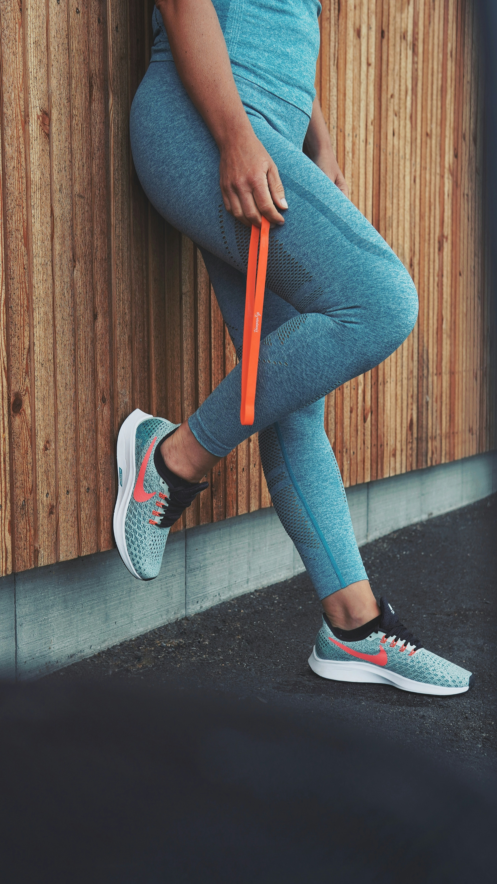

Bouger plus, vivre mieux : l'ostéopathie face à la sédentarité et au
surpoids
La sédentarité et le surpoids sont
des enjeux majeurs de santé. En
ostéopathie, nous vous aidons à retrouver
mobilité, bien-être et
énergie. Découvrez comment reprendre le
mouvement, naturellement.

Pourquoi bouger est essentiel pour votre santé ?
En France, plus de 50 % des adultes sont en
situation de surpoids ou
d’obésité. Ce constat, souvent lié à un
mode de vie sédentaire, a de nombreuses
conséquences sur la santé :
douleurs articulaires,
troubles digestifs,
fatigue chronique,
mauvaise posture...
En ostéopathie, nous observons régulièrement
l’impact de l’immobilité sur le corps.
Muscles tendus,
articulations raides,
système circulatoire ralenti... Heureusement, des
solutions simples existent pour retrouver un
équilibre corporel.
Comment l’ostéopathie peut vous aider ?
Par des techniques douces et
précises, l’ostéopathe aide à
libérer les tensions, à
rééquilibrer le corps et à favoriser une meilleure
mobilité. Cela permet de relancer les
systèmes circulatoire,
musculaire et digestif, facilitant
la reprise d’une activité physique régulière.
L’ostéopathie accompagne aussi les personnes en
surpoids ou en
perte de mobilité pour
prévenir les
douleurs chroniques (lombalgies,
cervicalgies, TMS) et améliorer la
qualité de vie.
Les bons gestes au quotidien
Se lever au moins toutes les 90 minutes si vous
êtes assis longtemps.
Marcher 30 minutes par jour, à votre rythme.
Privilégier les escaliers à l’ascenseur.
Réduire le temps passé devant les écrans.
Choisir des activités simples : jardinage, vélo,
étirements, yoga...
Une approche douce pour un changement durable
Reprendre le mouvement ne signifie pas tout changer
du jour au lendemain. L’ostéopathe vous accompagne
à votre rythme, dans le respect de votre corps, en
vous proposant des conseils personnalisés et
adaptés à votre mode de vie.
En complément, pratiquer une
activité physique régulière stimule les
muscles, mobilise les graisses,
favorise la respiration et améliore votre
posture. C’est un
cercle vertueux !
Envie de retrouver votre énergie et votre mobilité ?
Vous sentez que la sédentarité vous pèse,
physiquement et mentalement ? Vous souhaitez être accompagné pour
reprendre une activité physique adaptée ? L’ostéopathie
peut vous y aider.
Je vous accueille en cabinet pour un
bilan personnalisé et un
accompagnement bienveillant vers un
mode de vie plus actif, plus
mobile, plus serein.